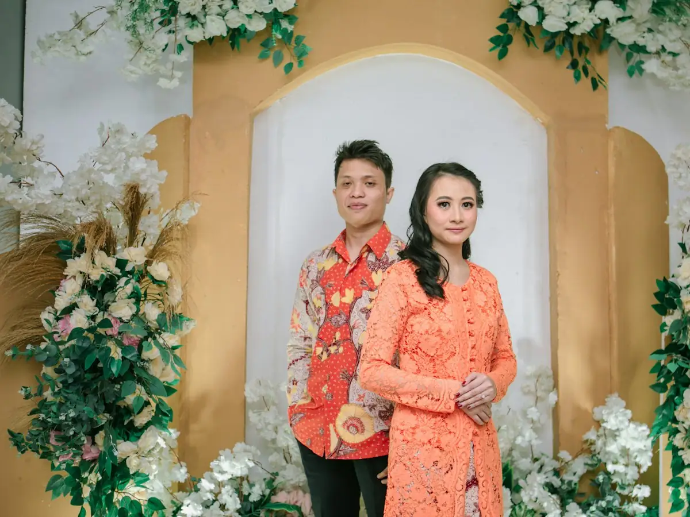
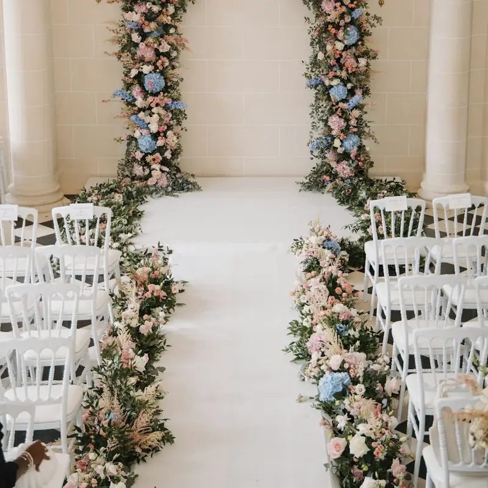
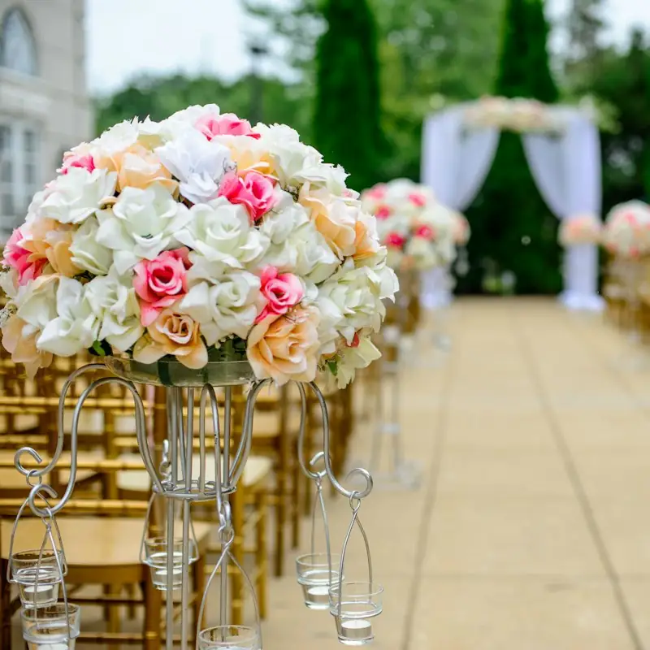
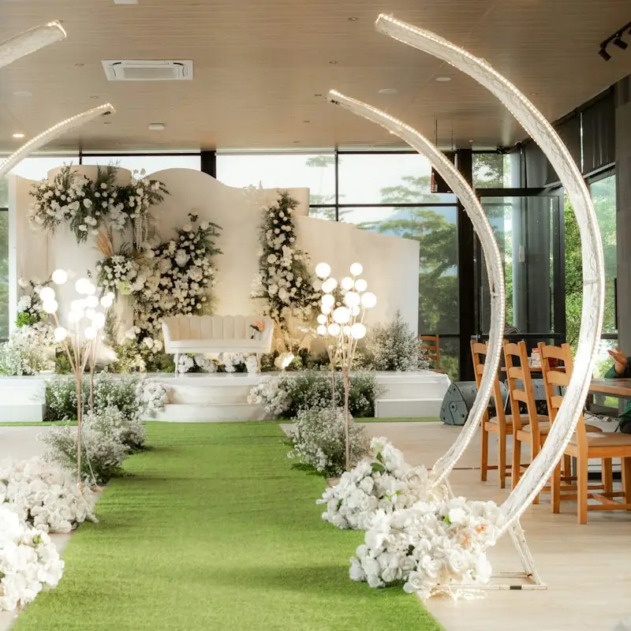
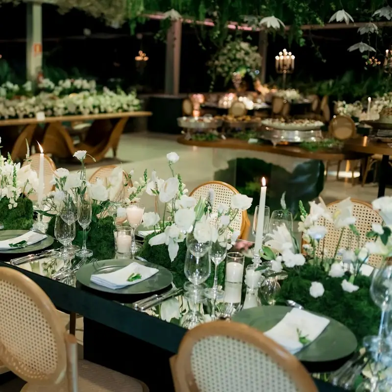
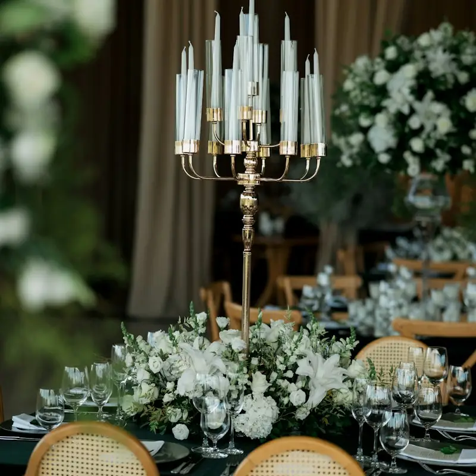

Wedding organizer untuk pernikahan adat dan modern di Cirebon, Kuningan, Indramayu, dan Majalengka. Dari konsep sampai acara selesai.
Sekar Wedding berdiri sejak 2018. Kami mengatur jadwal vendor, gladi, susunan acara, sampai urusan hari H, supaya keluarga cukup menikmati acaranya.

Konsep, jadwal vendor, gladi resik, dan koordinator acara di hari H.
Pelaminan adat Cirebon, Sunda, Jawa, atau modern sesuai tema.
Perias pengantin, busana akad dan resepsi, serta rias keluarga.
Dokumentasi akad sampai resepsi, termasuk video cinematic 3 menit.
Menu prasmanan dan gubukan dari katering rekanan yang sudah teruji.
Undangan online dengan RSVP dan QR check-in tamu, bekerja sama dengan berkenan.id.
Semua paket bisa disesuaikan. Harga sudah termasuk koordinator acara.




Kami tinggal di Jakarta, semua persiapan diurus lewat WhatsApp. Hari H berjalan rapi sesuai susunan acara.
Prosesi adatnya lengkap dan dipandu dengan sabar. Keluarga besar senang sekali.
Harganya jelas dari awal, tidak ada biaya tambahan mendadak. Dekorasinya persis seperti contoh.
Isi formulir singkat ini. Pesannya langsung masuk ke WhatsApp kami, dan kami balas di hari yang sama.